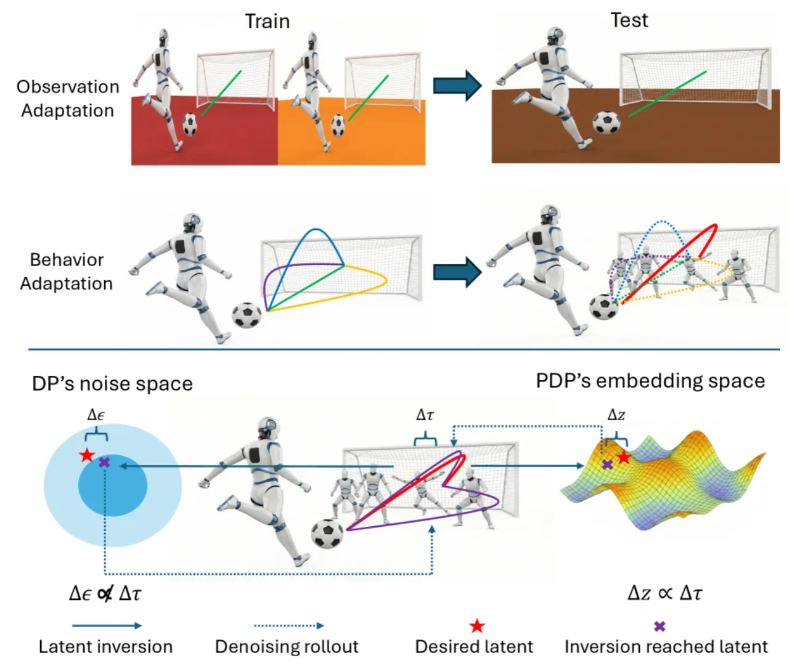
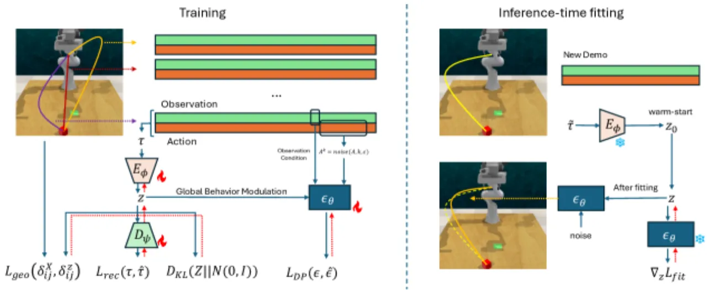
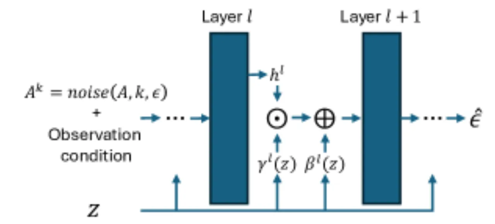
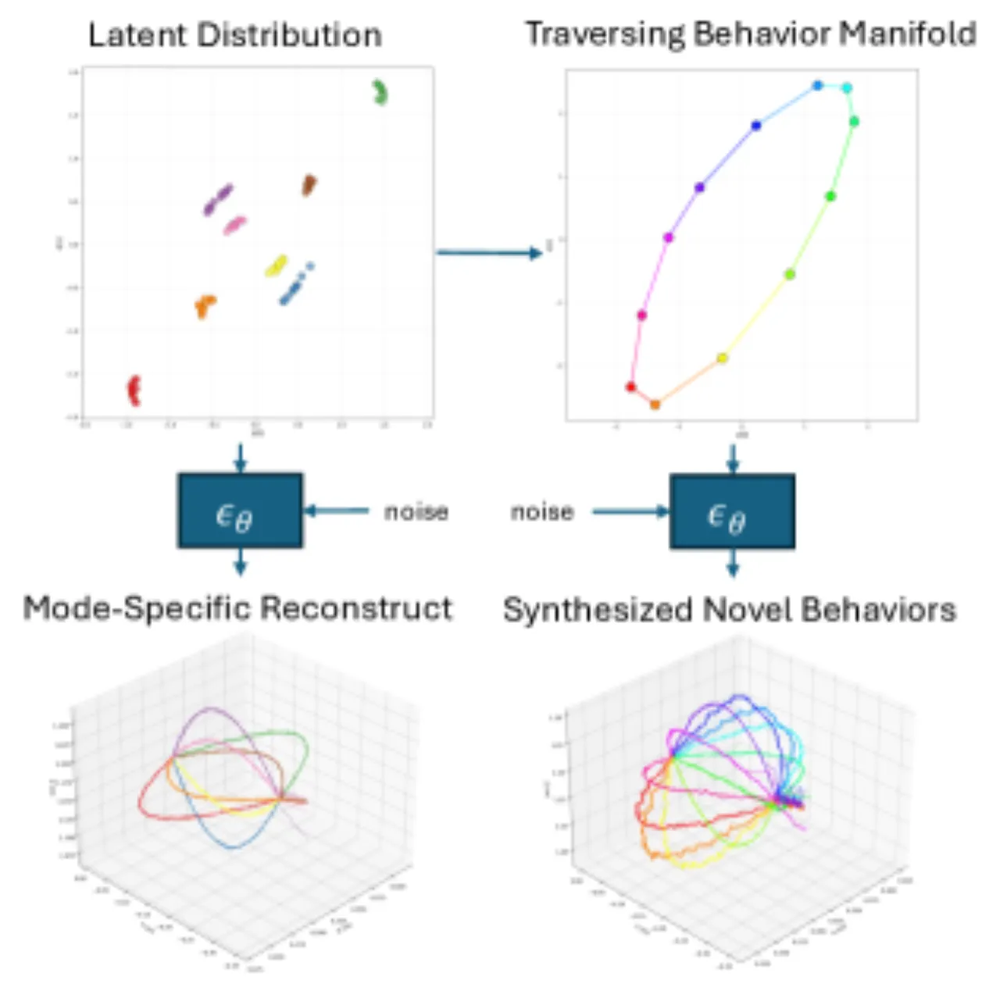
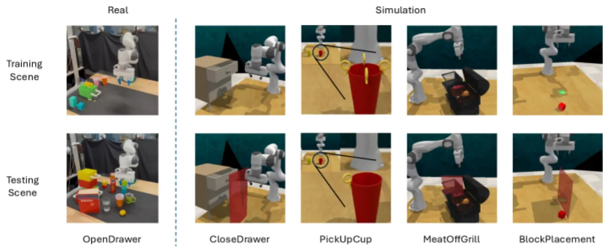
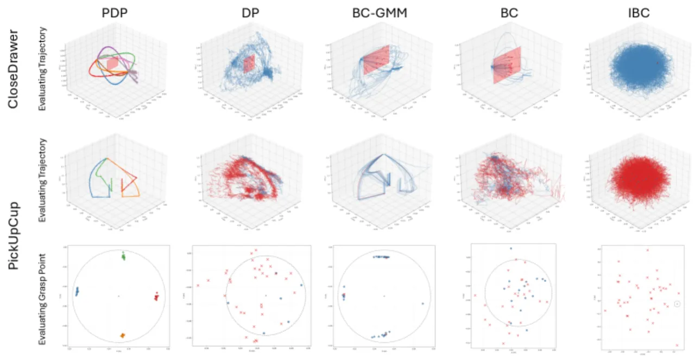
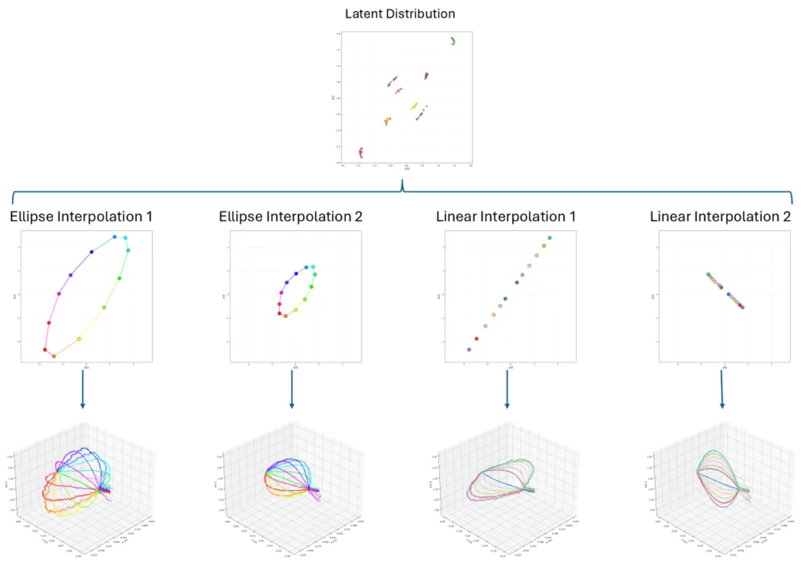

标准 diffusion policy 靠随机噪声产生多样轨迹，但"多样 ≠ 可控"：想在噪声空间里挑出某个模式是 ill-conditioned 的。PDP 引入一个低维连续 behavior latent z，并把它组织成一个"距离 ≈ 轨迹相似度"的几何对齐流形，让 z 成为可插值、可优化的控制旋钮。当环境约束变化使原有模式失效时，只需在冻结策略权重的前提下优化 z，即可完成模式选择、平滑插值与快速适应。
真实机器人任务往往是 underspecified 的：同一个目标在同一环境下可以由多条不同的动作序列完成（一对多结构），所以专家数据天然是 multimodal 的。理想策略既要 (i) 建模这些多模态行为，又要 (ii) 在约束变化时挑出正确的那一个去执行。Diffusion policy 因能表达多模态、高维动作序列而成为 behavior cloning 的强基线，但作者指出："diversity alone is not the same as controllability"。
论文研究的是 constraint-induced behavior shift：环境变化使训练集中的许多轨迹模式失效，成功要求"selecting or discovering a different trajectory mode"。而标准 DP 靠采样噪声来 steering 是 ill-conditioned 的——微小扰动会引起大而不可预测的轨迹变化。

PDP 在 diffusion policy 之上加入一个连续 behavior latent z∈ℝd_z，把控制分解为两部分：(i) 一个 geometry-aligned behavior manifold，把高维 demonstration 映射到"欧氏距离反映轨迹相似度"的隐空间；(ii) 一个 parameterized diffusion denoiser，在环境 context 与目标 z 双重条件下生成动作序列。测试时只优化 z、冻结策略权重，即可做 mode selection、行为插值与约束适应。

核心是学一个隐流形，使 zi 与 zj 的距离反映两条行为的语义相似度。作者不直接在原始观测上建结构，而是从每条 demonstration 抽取一段 behavior trace（基于状态的特征序列，如位置状态）。trajectory encoder Eφ 把整条 τ 映射为 Gaussian 后验 qφ(z|τ)=𝒩(μφ(τ), diag(σ²φ(τ)))，下游条件用确定性均值 z̄(τ)=μφ(τ)；训练时配一个对称 decoder Dψ 重建 τ 以保证信息完整。几何对齐用 soft-DTW 计算两条轨迹的物理距离 δXij 作为监督，使隐空间距离与之匹配——这正是"isometric"隐空间的来源（见消融）。
behavior latent 通过 MLP 变换成每层的 γ(l) 与 β(l)，以 affine 变换作用在 denoiser 的 feature map 上：h(l) ← γ(l)(z) ⊙ h(l) + β(l)(z)（FiLM 式全局调制）。作者的消融显示，这种注入方式比简单 concatenation 或不加条件 (unconditioned) 收敛到明显更低的 diffusion training loss，说明它有效降低了训练中的 inter-mode ambiguity。

约束变化时，PDP 冻结 {Eφ, εθ}，只调 z：先用 semantic warm-start z0=μφ(X(τ̃)) 从一条目标 demonstration 初始化，再沿 fitting loss ℒfit 迭代若干步。因为隐空间几何对齐，warm-start 已接近可行区，通常只需很少步数即可适应；随机初始化则几乎无法收敛（见 Table 6）。

在 9 个高多模态操作域（仿真 + 真机）上评测四点：behavior steering、原任务保真、几何驱动泛化、各组件必要性。基线共 9 种：DP、BC-GMM、BC、IBC、ADPro、Diff-ES、VQ-BeT、BESO。指标为 3 个随机种子下的成功率均值 ± 标准差。

| Task · Scene | PDP | DP | VQ-BeT | BC-GMM | BESO |
|---|---|---|---|---|---|
| CloseDrawer · S3 | 100.0 ± 0.0 | 40.0 ± 13.0 | 100.0 ± 0.0 | 0.0 ± 0.0 | 100.0 ± 0.0 |
| PlaceBlock · S3 | 86.7 ± 10.1 | 2.5 ± 2.5 | 76.0 ± 3.1 | 0.0 ± 0.0 | 16.2 ± 11.5 |
| MeatOffGrill · S3 | 91.7 ± 2.9 | 2.5 ± 2.5 | 0.0 ± 0.0 | 0.0 ± 0.0 | 0.0 ± 0.0 |
| PickUpCup · S2 | 85.0 ± 2.5 | 0.8 ± 1.4 | 55.0 ± 5.0 | 72.5 ± 4.3 | 22.5 ± 15.9 |
| Overall Avg. | 92.0 | 21.5 | 64.6 | 13.8 | 30.6 |
Scene 1–2 使除单一模式外的所有训练模式失效；Scene 3 是 zero-mode-feasible 设定——所有训练模式都失效，仅提供一条新 demonstration 用于适应。可见在 zero-mode-feasible（S3）的 MeatOffGrill 上，PDP 达 91.7% 而所有基线接近 0；总体上 PDP 92.0% 远超次优 VQ-BeT 的 64.6%。
| Task | PDP | DP | Diff-ES | VQ-BeT |
|---|---|---|---|---|
| CloseDrawer | 100.0 ± 0.0 | 88.3 ± 3.8 | 99.2 ± 0.8 | 100.0 ± 0.0 |
| PlaceBlock | 97.5 ± 2.5 | 60.0 ± 6.6 | 80.0 ± 0.0 | 77.5 ± 0.0 |
| MeatOffGrill | 73.3 ± 2.9 | 52.5 ± 8.7 | 60.0 ± 0.0 | 0.0 ± 0.0 |
| PickUpCup | 90.0 ± 5.0 | 15.8 ± 3.8 | 40.0 ± 0.0 | 79.2 ± 1.7 |
即使在无约束偏移的原任务上，PDP 也在这四个域全部取得最佳/并列最佳——说明 behavior latent 足够表达训练数据的多模态分布，并非以牺牲原任务保真换取适应性。
| Method | Original | Scene 1 | Scene 2 | Scene 3 |
|---|---|---|---|---|
| PDP | 5/5 | 5/5 | 5/5 | 5/5 |
| DP | 5/5 | 3/5 | 1/5 | 2/5 |


作者原文："adaptation relies on a successful demonstration, and the adapted behavior is expected to lie within or near the learned behavior space induced by existing demonstrations." 即测试时适应需要一条目标 demonstration 做 warm-start，且生成行为预期位于/接近已有示范诱导出的 behavior space——离该流形太远的全新策略未必可达。
正文超参数表把 latent 维度设为 2。这利于可视化与插值，但对模式数量更多、跨阶段组合更复杂的任务，2 维隐空间的表达力是否足够，论文未在更高维度上系统验证。
几何对齐建立在从 demonstration 抽取的 state-based behavior trace 与 soft-DTW 物理距离之上。对于难以用低维状态轨迹刻画相似度的任务（如以视觉/接触为主的行为），该"距离 ≈ 相似度"假设是否仍成立，未展开讨论。
实验覆盖 9 个操作域（drawer/cup/block 等），虽含真机，但未涉及导航、动态/高频控制等场景，泛化范围有待进一步验证。